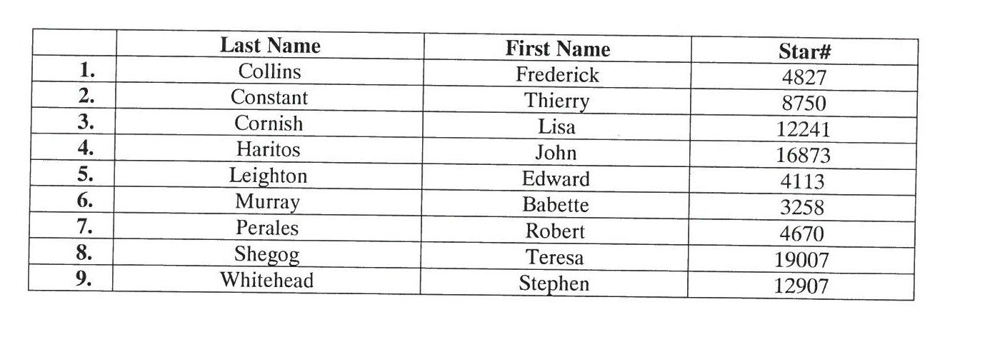
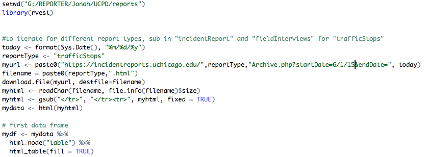

How many police officers are in CPD's Early Intervention System?
First request:
"Records sufficient to show the number of sworn personnel who were placed into the Behavioral Intervention System and Personnel Concerns programs, by year, from 2011 to 2015 (to date)."
Second request:
"Names and badge numbers of all officers enrolled in the Behavioral Intervention System and Personnel Concerns programs"
Response:
What percentage of stops made by University of Chicago Police are of African-Americans?
Coding can come in handy
